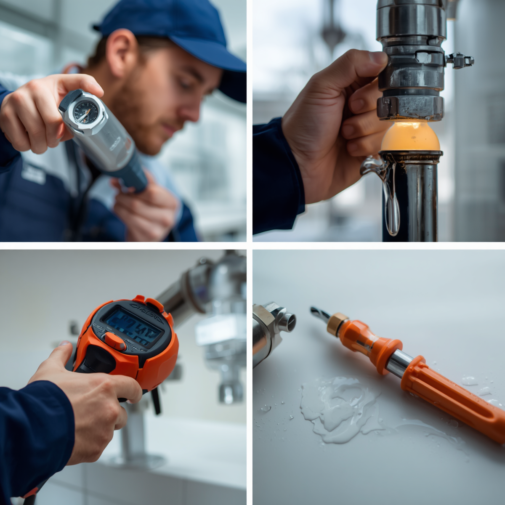
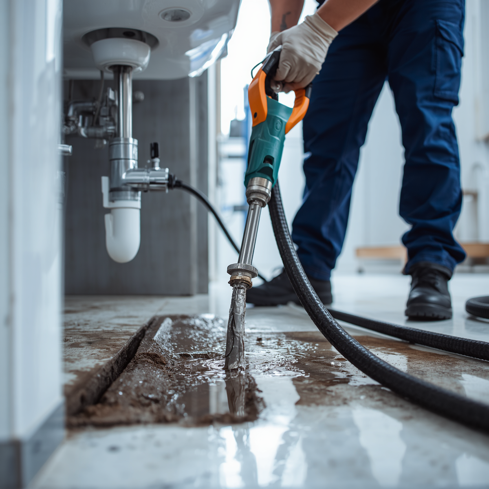
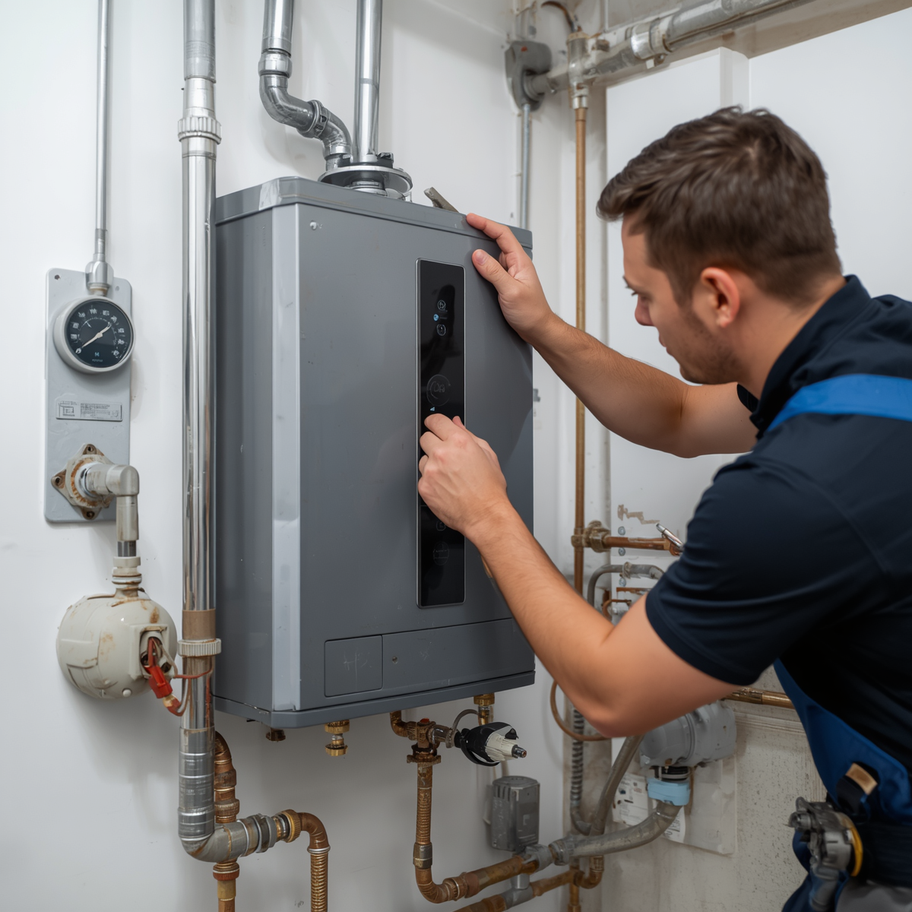
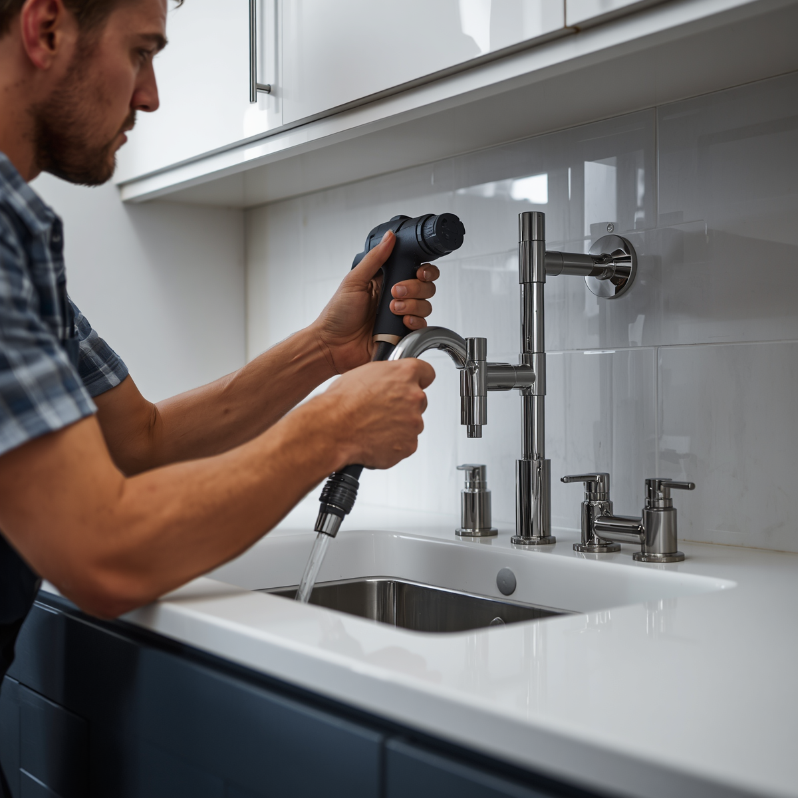
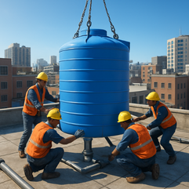

What We Offer
The Masepa Industry provides a comprehensive range of products and services tailored to meet the unique needs of our clients. Our expert team is dedicated to delivering exceptional quality and value in every engagement.
The Masepa Industry provides a comprehensive range of products and services tailored to meet the unique needs of our clients. Our expert team is dedicated to delivering exceptional quality and value in every engagement.

Water leaks waste money and can damage your walls, ceilings, and foundation. We use modern leak detection tools to find hidden leaks without breaking unnecessary walls. Our team repairs burst pipes, dripping taps, and leaking joints quickly and cleanly. We work with copper, PVC, and PPR piping to make sure the fix lasts.

Blocked drains and toilets can disrupt your whole day. We provide professional drain cleaning using high-pressure water jetting and drain rods to clear grease, hair, roots, and other blockages. We also inspect drains with cameras to find the root cause and prevent future problems.

No hot water? We install, repair, and maintain all types of electric and solar geysers. Our service includes new geyser installation, thermostat replacement, element repairs, and burst geyser replacement. We also install pressure valves and drip trays to meet SABS safety standards.

Renovating or building? We handle complete plumbing installations for bathrooms and kitchens. This includes installing basins, toilets, showers, mixers, sinks, dishwashers, and water filtration systems. We do both new installations and upgrades, with neat pipework and no leaks.
Plumbing emergencies don't wait for business hours. We offer 24/7 emergency services for burst pipes, major leaks, and blocked sewers. Our rapid response team will minimize water damage and get your plumbing back to normal quickly. We're available nights, weekends, and holidays with competitive emergency rates.

Low water pressure or unreliable supply? We install pressure-boosting systems, water tanks, and pressure switches to ensure consistent water pressure throughout your property. We also handle water meter installation, supply line upgrades, and pressure reduction valve installations for optimal water flow and safety.
Our team brings years of experience and a proven track record of success. We are committed to understanding your needs and delivering customized solutions that drive real business results. With our dedication to quality and customer satisfaction, you can trust us to be your reliable partner.